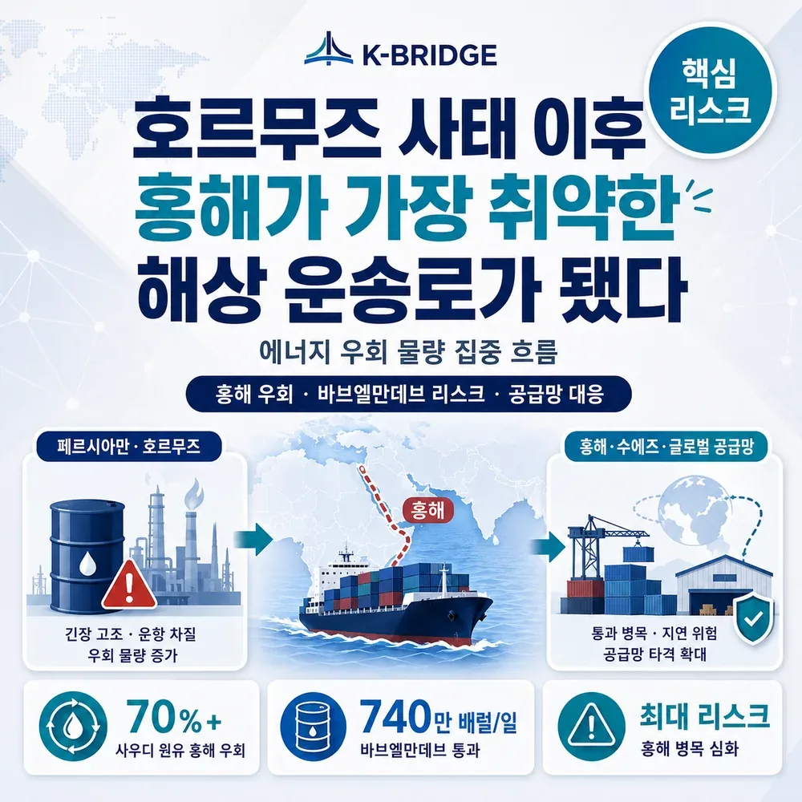
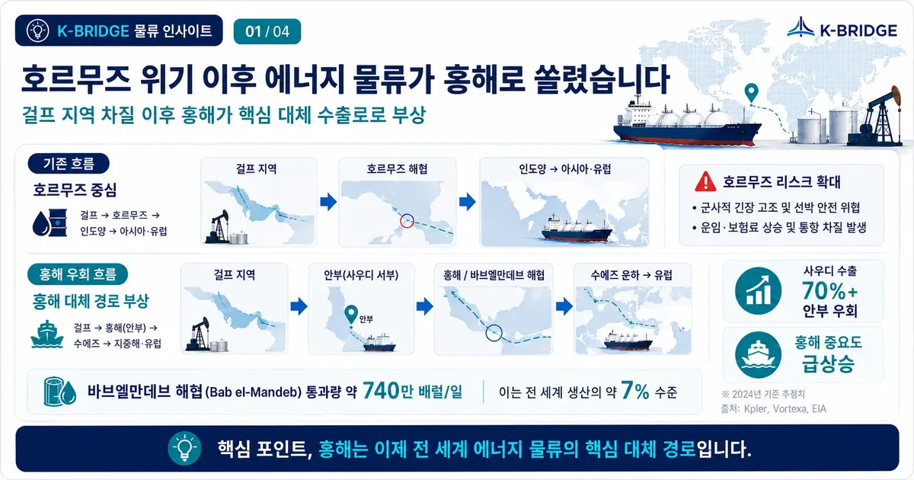
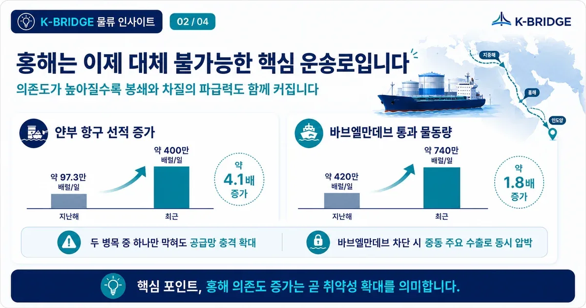
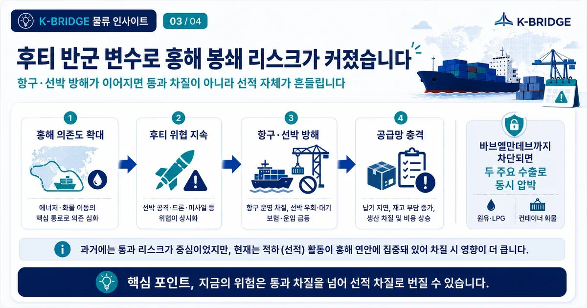
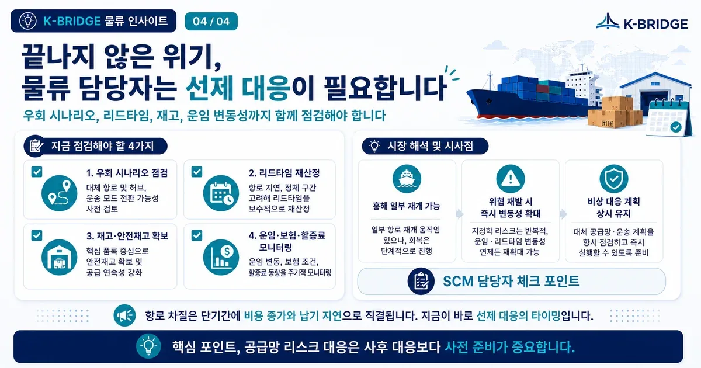

핵심 요약
호르무즈 해협 차질 이후 홍해는 걸프 원유의 핵심 대체 수출로가 됐습니다. 하지만 물동량과 선적이 홍해 연안에 집중될수록 바브엘만데브 봉쇄, 후티 공격, 선사 우회 결정이 전 세계 에너지 가격과 해상운임에 미치는 영향도 커집니다. 화주는 대체 항로, 리드타임 버퍼, 보험료, 비상 재고를 함께 관리해야 합니다.
호르무즈 차질이 홍해의 전략적 중요성을 키웠습니다
호르무즈 해협의 통항이 제한되면 걸프 지역 원유와 석유제품은 대체 출구가 필요합니다. 사우디아라비아는 동서 송유관과 홍해 연안의 얀부 항구를 활용해 원유를 우회시키고 있으며, 이 과정에서 홍해와 바브엘만데브를 통과하는 에너지 물동량이 빠르게 늘었습니다.

위 수치는 트레드링스가 인용한 Reuters·Kpler 자료 기준입니다. 항만 선적량과 해협 통과량은 시점과 집계 기준에 따라 달라질 수 있습니다.
대체 불가능해진 순간, 홍해는 더 취약해졌습니다
과거 홍해 리스크는 선박이 수에즈와 바브엘만데브를 자유롭게 통과할 수 있는지에 집중됐습니다. 지금은 상황이 다릅니다. 호르무즈 차질 때문에 원유 선적 자체가 홍해 연안으로 옮겨오면서, 홍해는 단순 통과 항로가 아니라 중동 에너지 수출의 핵심 출발점이 됐습니다.

얀부 항구 선적량과 바브엘만데브 통과량이 동시에 증가했다는 것은 홍해 의존도가 그만큼 높아졌다는 뜻입니다. 바브엘만데브 해협까지 차단되면 호르무즈와 홍해라는 두 주요 원유 수출 경로가 동시에 흔들릴 수 있습니다. 이 경우 희망봉 우회만으로 해결하기 어려운 에너지 공급 공백이 생기고, 원유 가격과 선박 운임, 보험료가 함께 상승할 가능성이 큽니다.
후티 반군은 예측하기 어려운 항로 변수입니다
홍해 위험의 중심에는 예멘의 후티 반군이 있습니다. 후티는 과거 선박과 항만을 공격하며 주요 선사들이 수에즈 항로를 포기하고 희망봉으로 우회하도록 만들었습니다. 현재 일부 선사가 홍해·수에즈 운항을 재개하고 있지만, 지역 갈등이 다시 확대되면 운영 방침은 빠르게 바뀔 수 있습니다.

- 선사가 홍해 노선을 재개했더라도 전체 선대가 동일한 기준으로 운항하는 것은 아닙니다.
- 선박 국적, 선사, 화물 성격, 보험사의 위험평가에 따라 항로 선택이 달라질 수 있습니다.
- 공격이나 위협이 발생하면 공지와 실제 항로 변경 사이의 시간이 매우 짧을 수 있습니다.
홍해 리스크는 운임보다 먼저 리드타임을 흔듭니다
선사가 홍해를 피하고 희망봉으로 우회하면 항해 거리가 늘어나고 선박 회전율이 낮아집니다. 같은 물량을 운송하는 데 더 많은 선박과 시간이 필요해지므로, 운임과 유류비·보험료·성수기 할증료가 함께 오를 수 있습니다.
실무자는 단순 해상운임보다 실제 도착일까지의 총 리드타임과 랜디드 코스트를 비교해야 합니다. 특히 유럽·지중해·중동향 화물은 환적항 변경, 스케줄 누락, 장비 회수 지연까지 함께 확인해야 합니다.
물류 담당자는 비상 대응 시나리오를 미리 준비해야 합니다

- 대체 항로: 수에즈, 희망봉, 항공 전환, 해상·철도 복합운송을 비교합니다.
- 리드타임: 생산 완료일과 납기 사이에 우회 운항과 환적 지연 버퍼를 확보합니다.
- 비용: 기본 운임뿐 아니라 전쟁위험보험, 유류할증료, 체선·창고 비용을 포함합니다.
- 공지: 선사와 포워더의 홍해 운항 공지, 예약 제한, 선적 취소 조건을 수시로 확인합니다.
- BCP: 핵심 원자재와 판매 재고의 최소 안전재고, 대체 공급처, 긴급 운송 기준을 정합니다.
홍해 사태는 특정 선박이나 한 항차의 문제가 아니라 전 세계 선복 회전과 장비 배치에 영향을 주는 공급망 변수입니다. 직접 홍해를 통과하지 않는 화물도 간접적인 운임·스케줄 영향을 받을 수 있습니다.
자주 묻는 질문
Q. 홍해가 왜 세계에서 가장 취약한 항로로 평가되나요?
Q. 홍해 항로가 다시 막히면 모든 선박이 희망봉으로 우회하나요?
Q. 한국 화물에도 영향이 있나요?
홍해 리스크, 운임표보다 먼저 항로와 납기를 점검하세요
케이브릿지는 목적지, 화물 특성, 납기, 선사 운항 방침을 기준으로 수에즈·희망봉·항공·복합운송 대안을 함께 검토합니다. 급변하는 항로 상황에서 총비용과 도착 안정성을 비교해 출고 계획을 세워보세요.
참고 자료
· 트레드링스, 호르무즈 사태 이후 홍해가 세계에서 가장 취약한 해상 운송로가 된 이유, 2026-07-16
· Reuters, Why Iranian and Houthi threats to Red Sea shipping matter more for oil now, 2026-07-15
· U.S. EIA, Global Energy Security Data - Bab el-Mandeb oil flows
· Maersk, Structural changes to MECL, 2026-07-09
※ 본 글은 공개된 시장 자료를 바탕으로 작성한 일반 정보입니다. 실제 운항 여부, 보험 조건, 운임과 선복은 예약 시점에 다시 확인해야 합니다.